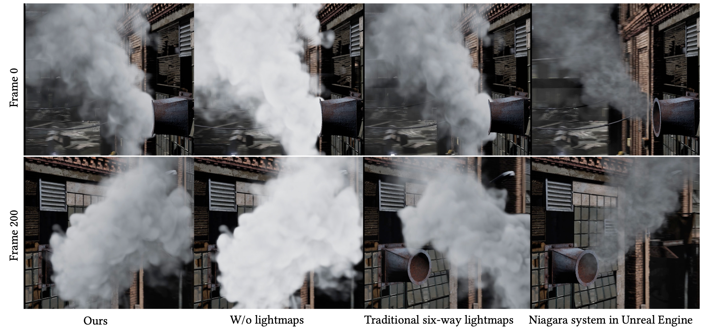
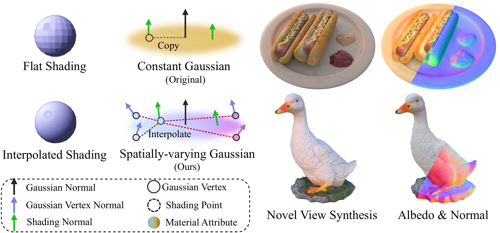
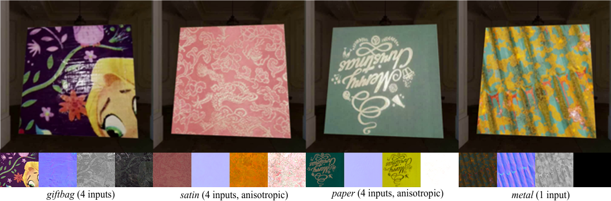
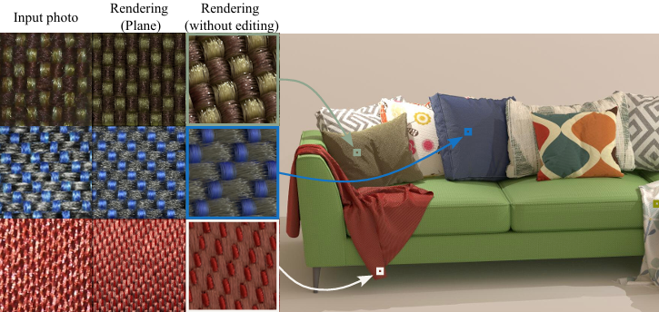

Ph.D. Student, The Hong Kong University of Science and Technology
Incoming, Fall 2026 · Advisor: Prof. Wenhan Luo · Co-supervisor: Prof. Hongbo Fu
Research focus: AIGC, computer graphics, and 3D vision.
AIGC · Computer Graphics · 3D Vision
M.S. student at Nankai University · Incoming Ph.D. student at HKUST, Fall 2026
I am a second-year M.S. student in Computer Science at Nankai University starting from Fall 2023, supervised by Prof. Beibei Wang. My research focuses on AIGC, computer graphics, and 3D vision.
I will join HKUST as a Ph.D. student in Fall 2026, advised by Prof. Wenhan Luo and co-supervised by Prof. Hongbo Fu.
Academic Background
Incoming, Fall 2026 · Advisor: Prof. Wenhan Luo · Co-supervisor: Prof. Hongbo Fu
Research focus: AIGC, computer graphics, and 3D vision.
Fall 2023 - Present · Supervisor: Prof. Beibei Wang
Research focus: computer graphics, inverse rendering, material acquisition, and 3D vision.
2019 - 2023
Built a foundation in computer science and related engineering topics.
Research & Industry
Oct 2025 - Present · Advisors: Mingxin Yang, Shuhui Yang, Xintong Han
Working on high-quality 3D generation and editing research.
Mar 2025 - Oct 2025 · Mentor: Kui Wu
Worked on computer graphics research related to real-time rendering.
Selected Work
* Equal contribution † Corresponding author




Feel free to contact me at: hx.sun@mail.nankai.edu.cn